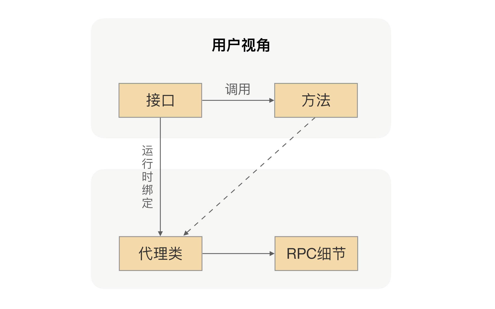
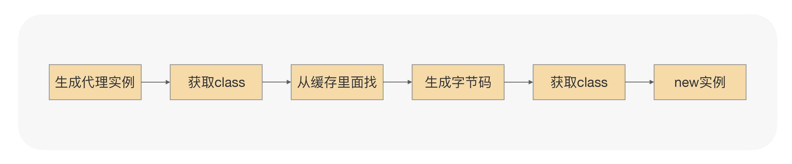

- 00 开篇词 别老想着怎么用好RPC框架，你得多花时间琢磨原理.md.html
- 01 核心原理：能否画张图解释下RPC的通信流程？.md.html
- 02 协议：怎么设计可扩展且向后兼容的协议？.md.html
- 03 序列化：对象怎么在网络中传输？.md.html
- 04 网络通信：RPC框架在网络通信上更倾向于哪种网络IO模型？.md.html
- 05 动态代理：面向接口编程，屏蔽RPC处理流程.md.html
- 06 RPC实战：剖析gRPC源码，动手实现一个完整的RPC.md.html
- 07 架构设计：设计一个灵活的RPC框架.md.html
- 08 服务发现：到底是要CP还是AP？.md.html
- 09 健康检测：这个节点都挂了，为啥还要疯狂发请求？.md.html
- 10 路由策略：怎么让请求按照设定的规则发到不同的节点上？.md.html
- 11 负载均衡：节点负载差距这么大，为什么收到的流量还一样？.md.html
- 12 异常重试：在约定时间内安全可靠地重试.md.html
- 13 优雅关闭：如何避免服务停机带来的业务损失？.md.html
- 14 优雅启动：如何避免流量打到没有启动完成的节点？.md.html
- 15 熔断限流：业务如何实现自我保护_.md.html
- 16 业务分组：如何隔离流量？.md.html
- 17 异步RPC：压榨单机吞吐量.md.html
- 18 安全体系：如何建立可靠的安全体系？.md.html
- 19 分布式环境下如何快速定位问题？.md.html
- 20 详解时钟轮在RPC中的应用.md.html
- 21 流量回放：保障业务技术升级的神器.md.html
- 22 动态分组：超高效实现秒级扩缩容.md.html
- 23 如何在没有接口的情况下进行RPC调用？.md.html
- 24 如何在线上环境里兼容多种RPC协议？.md.html
- 加餐 RPC框架代码实例详解.md.html
- 加餐 谈谈我所经历过的RPC.md.html
- 答疑课堂 基础篇与进阶篇思考题答案合集.md.html
- 结束语 学会从优秀项目的源代码中挖掘知识.md.html
- 捐赠
05 动态代理：面向接口编程，屏蔽RPC处理流程
你好，我是何小锋。上一讲我分享了网络通信，其实要理解起来也很简单，RPC 是用来解决两个应用之间的通信，而网络则是两台机器之间的“桥梁”，只有架好了桥梁，我们才能把请求数据从一端传输另外一端。其实关于网络通信，你只要记住一个关键字就行了——可靠的传输。
那么接着上一讲的内容，我们再来聊聊动态代理在 RPC 里面的应用。
如果我问你，你知道动态代理吗？ 你可能会如数家珍般地告诉我动态代理的作用以及好处。那我现在接着问你，你在项目中用过动态代理吗？这时候可能有些人就会犹豫了。那我再换一个方式问你，你在项目中有实现过统一拦截的功能吗？比如授权认证、性能统计等等。你可能立马就会想到，我实现过呀，并且我知道可以用 Spring 的 AOP 功能来实现。
没错，进一步再想，在 Spring AOP 里面我们是怎么实现统一拦截的效果呢？并且是在我们不需要改动原有代码的前提下，还能实现非业务逻辑跟业务逻辑的解耦。这里的核心就是采用动态代理技术，通过对字节码进行增强，在方法调用的时候进行拦截，以便于在方法调用前后，增加我们需要的额外处理逻辑。
那话说回来，动态代理跟 RPC 又有什么关系呢？
远程调用的魔法
我说个具体的场景，你可能就明白了。
在项目中，当我们要使用 RPC 的时候，我们一般的做法是先找服务提供方要接口，通过 Maven 或者其他的工具把接口依赖到我们项目中。我们在编写业务逻辑的时候，如果要调用提供方的接口，我们就只需要通过依赖注入的方式把接口注入到项目中就行了，然后在代码里面直接调用接口的方法 。
我们都知道，接口里并不会包含真实的业务逻辑，业务逻辑都在服务提供方应用里，但我们通过调用接口方法，确实拿到了想要的结果，是不是感觉有点神奇呢？想一下，在 RPC 里面，我们是怎么完成这个魔术的。
这里面用到的核心技术就是前面说的动态代理。RPC 会自动给接口生成一个代理类，当我们在项目中注入接口的时候，运行过程中实际绑定的是这个接口生成的代理类。这样在接口方法被调用的时候，它实际上是被生成代理类拦截到了，这样我们就可以在生成的代理类里面，加入远程调用逻辑。
通过这种“偷梁换柱”的手法，就可以帮用户屏蔽远程调用的细节，实现像调用本地一样地调用远程的体验，整体流程如下图所示：

实现原理
动态代理在 RPC 里面的作用，就像是个魔术。现在我不妨给你揭秘一下，我们一起看看这是怎么实现的。之后，学以致用自然就不难了。
我们以 Java 为例，看一个具体例子，代码如下所示：
/**
* 要代理的接口
*/
public interface Hello {
String say();
}
/**
* 真实调用对象
*/
public class RealHello {
public String invoke(){
return "i'm proxy";
}
}
/**
* JDK代理类生成
*/
public class JDKProxy implements InvocationHandler {
private Object target;
JDKProxy(Object target) {
this.target = target;
}
@Override
public Object invoke(Object proxy, Method method, Object[] paramValues) {
return ((RealHello)target).invoke();
}
}
/**
* 测试例子
*/
public class TestProxy {
public static void main(String[] args){
// 构建代理器
JDKProxy proxy = new JDKProxy(new RealHello());
ClassLoader classLoader = ClassLoaderUtils.getCurrentClassLoader();
// 把生成的代理类保存到文件
System.setProperty("sun.misc.ProxyGenerator.saveGeneratedFiles","true");
// 生成代理类
Hello test = (Hello) Proxy.newProxyInstance(classLoader, new Class[]{Hello.class}, proxy);
// 方法调用
System.out.println(test.say());
}
}
这段代码想表达的意思就是：给 Hello 接口生成一个动态代理类，并调用接口 say() 方法，但真实返回的值居然是来自 RealHello 里面的 invoke() 方法返回值。你看，短短50行的代码，就完成了这个功能，是不是还挺有意思的？
那既然重点是代理类的生成，那我们就去看下 Proxy.newProxyInstance 里面究竟发生了什么？
一起看下下面的流程图，具体代码细节你可以对照着 JDK 的源码看（上文中有类和方法，可以直接定位），我是按照 1.7.X 版本梳理的。

在生成字节码的那个地方，也就是 ProxyGenerator.generateProxyClass() 方法里面，通过代码我们可以看到，里面是用参数 saveGeneratedFiles 来控制是否把生成的字节码保存到本地磁盘。同时为了更直观地了解代理的本质，我们需要把参数 saveGeneratedFiles 设置成true，但这个参数的值是由key为“sun.misc.ProxyGenerator.saveGeneratedFiles”的Property来控制的，动态生成的类会保存在工程根目录下的 com/sun/proxy 目录里面。现在我们找到刚才生成的 $Proxy0.class，通过反编译工具打开class文件，你会看到这样的代码：
package com.sun.proxy;
import com.proxy.Hello;
import java.lang.reflect.InvocationHandler;
import java.lang.reflect.Method;
import java.lang.reflect.Proxy;
import java.lang.reflect.UndeclaredThrowableException;
public final class $Proxy0 extends Proxy implements Hello {
private static Method m3;
private static Method m1;
private static Method m0;
private static Method m2;
public $Proxy0(InvocationHandler paramInvocationHandler) {
super(paramInvocationHandler);
}
public final String say() {
try {
return (String)this.h.invoke(this, m3, null);
} catch (Error|RuntimeException error) {
throw null;
} catch (Throwable throwable) {
throw new UndeclaredThrowableException(throwable);
}
}
public final boolean equals(Object paramObject) {
try {
return ((Boolean)this.h.invoke(this, m1, new Object[] { paramObject })).booleanValue();
} catch (Error|RuntimeException error) {
throw null;
} catch (Throwable throwable) {
throw new UndeclaredThrowableException(throwable);
}
}
public final int hashCode() {
try {
return ((Integer)this.h.invoke(this, m0, null)).intValue();
} catch (Error|RuntimeException error) {
throw null;
} catch (Throwable throwable) {
throw new UndeclaredThrowableException(throwable);
}
}
public final String toString() {
try {
return (String)this.h.invoke(this, m2, null);
} catch (Error|RuntimeException error) {
throw null;
} catch (Throwable throwable) {
throw new UndeclaredThrowableException(throwable);
}
}
static {
try {
m3 = Class.forName("com.proxy.Hello").getMethod("say", new Class[0]);
m1 = Class.forName("java.lang.Object").getMethod("equals", new Class[] { Class.forName("java.lang.Object") });
m0 = Class.forName("java.lang.Object").getMethod("hashCode", new Class[0]);
m2 = Class.forName("java.lang.Object").getMethod("toString", new Class[0]);
return;
} catch (NoSuchMethodException noSuchMethodException) {
throw new NoSuchMethodError(noSuchMethodException.getMessage());
} catch (ClassNotFoundException classNotFoundException) {
throw new NoClassDefFoundError(classNotFoundException.getMessage());
}
}
}
我们可以看到 $Proxy0 类里面有一个跟 Hello 一样签名的 say() 方法，其中 this.h 绑定的是刚才传入的 JDKProxy 对象，所以当我们调用 Hello.say() 的时候，其实它是被转发到了JDKProxy.invoke()。到这儿，整个魔术过程就透明了。
实现方法
其实在 Java 领域，除了JDK 默认的nvocationHandler能完成代理功能，我们还有很多其他的第三方框架也可以，比如像 Javassist、Byte Buddy 这样的框架。
单纯从代理功能上来看，JDK 默认的代理功能是有一定的局限性的，它要求被代理的类只能是接口。原因是因为生成的代理类会继承 Proxy 类，但Java 是不支持多重继承的。
这个限制在RPC应用场景里面还是挺要紧的，因为对于服务调用方来说，在使用RPC的时候本来就是面向接口来编程的，这个我们刚才在前面已经讨论过了。使用JDK默认的代理功能，最大的问题就是性能问题。它生成后的代理类是使用反射来完成方法调用的，而这种方式相对直接用编码调用来说，性能会降低，但好在JDK8及以上版本对反射调用的性能有很大的提升，所以还是可以期待一下的。
相对 JDK 自带的代理功能，Javassist的定位是能够操纵底层字节码，所以使用起来并不简单，要生成动态代理类恐怕是有点复杂了。但好的方面是，通过Javassist生成字节码，不需要通过反射完成方法调用，所以性能肯定是更胜一筹的。在使用中，我们要注意一个问题，通过Javassist生成一个代理类后，此 CtClass 对象会被冻结起来，不允许再修改；否则，再次生成时会报错。
Byte Buddy 则属于后起之秀，在很多优秀的项目中，像Spring、Jackson都用到了Byte Buddy来完成底层代理。相比Javassist，Byte Buddy提供了更容易操作的API，编写的代码可读性更高。更重要的是，生成的代理类执行速度比Javassist更快。
虽然以上这三种框架使用的方式相差很大，但核心原理却是差不多的，区别就只是通过什么方式生成的代理类以及在生成的代理类里面是怎么完成的方法调用。同时呢，也正是因为这些细小的差异，才导致了不同的代理框架在性能方面的表现不同。因此，我们在设计RPC框架的时候，还是需要进行一些比较的，具体你可以综合它们的优劣以及你的场景需求进行选择。
总结
今天我们介绍了动态代理在RPC里面的应用，虽然它只是一种具体实现的技术，但我觉得只有理解了方法调用是怎么被拦截的，才能厘清在RPC里面我们是怎么做到面向接口编程，帮助用户屏蔽RPC调用细节的，最终呈现给用户一个像调用本地一样去调用远程的编程体验。
既然动态代理是一种具体的技术框架，那就会涉及到选型。我们可以从这样三个角度去考虑：
- 因为代理类是在运行中生成的，那么代理框架生成代理类的速度、生成代理类的字节码大小等等，都会影响到其性能——生成的字节码越小，运行所占资源就越小。
- 还有就是我们生成的代理类，是用于接口方法请求拦截的，所以每次调用接口方法的时候，都会执行生成的代理类，这时生成的代理类的执行效率就需要很高效。
- 最后一个是从我们的使用角度出发的，我们肯定希望选择一个使用起来很方便的代理类框架，比如我们可以考虑：API设计是否好理解、社区活跃度、还有就是依赖复杂度等等。
最后，我想再强调一下。动态代理在RPC里面，虽然看起来只是一个很小的技术点，但就是这个创新使得用户可以不用关注细节了。其实，我们在日常设计接口的时候也是一样的，我们会想尽一切办法把细节对调用方屏蔽，让调用方的接入尽可能的简单。这就好比，让你去设计一个商品发布的接口，你并不需要暴露给用户一些细节，比如，告诉他们商品数据是怎么存储的。
课后思考
请你设想一下，如果没有动态代理帮我们完成方法调用拦截，用户该怎么完成RPC调用？
欢迎留言和我分享你的答案，也欢迎你把文章分享给你的朋友，邀请他加入学习。我们下节课再见！
© 2019 - 2023 Liangliang Lee. Powered by gin and hexo-theme-book.